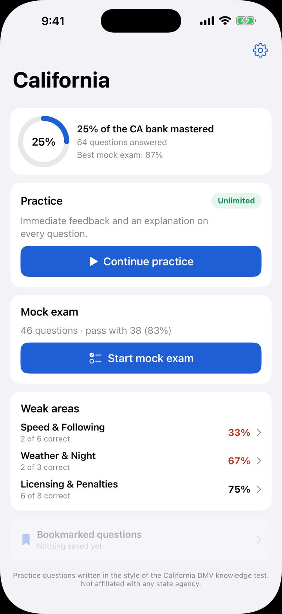
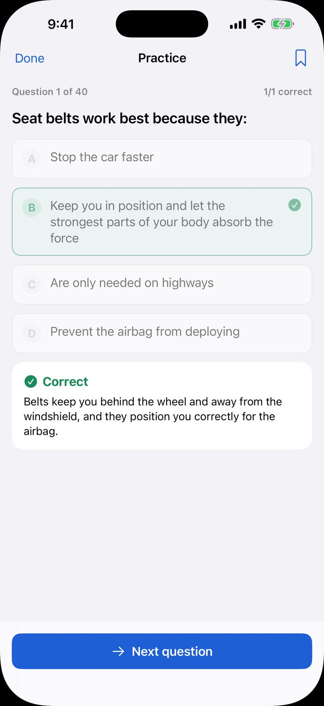
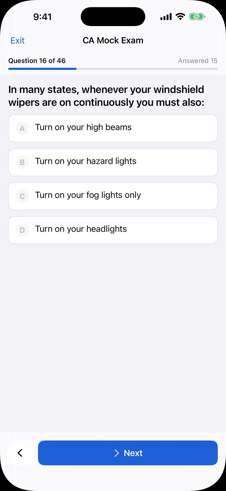
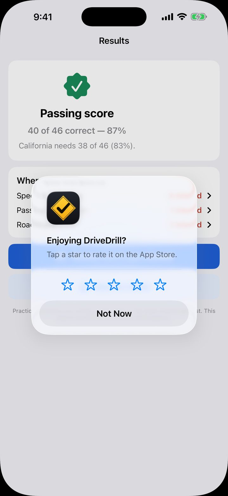

Your state's real permit test, practised.
All 50 states and the District of Columbia. 230+ questions each. Works offline.
Get DriveDrill on the App Store iPhone · iOS 17 or later · Free trial on weekly plans
Also in DriveDrill: CDL prep · Motorcycle prep · En español




What you get
- Practice mode with instant feedback and an explanation on every question.
- Full-length mock exams for every state, following the published format where your state has one.
- Real road signs. Sign questions show the actual sign, from the Federal Highway Administration's Standard Highway Signs.
- 60+ animated road scenes: blinking signals, brake lights, school bus and emergency lights, railroad gates.
- Weak-area drills built from the questions you actually keep missing.
- A learning map of short lessons, and a study plan built around your test date.
- Road test prep: your state's road test checklist and 21 step-by-step lessons.
- Offline. No account, no sign-up, no email address.
CDL prep: all eight knowledge tests
Going for a commercial driver's license? DriveDrill has 1,600+ CDL practice questions, written from the national CDL manual, across all eight CDL knowledge tests and the pre-trip inspection.
- The eight tests: General Knowledge, Air Brakes, Combination Vehicles, Hazardous Materials, Tanker, Doubles/Triples, Passenger and School Bus, each with its own practice exam.
- Pre-trip inspection: a step-by-step checklist, with a quiz.
- Diagrams of the air brakes and the coupling check, and every hazmat placard (the placards are the U.S. DOT's own artwork).
- CDL is a separate purchase from the car permit Premium.
Get DriveDrill for CDL prep More about CDL prep →
Motorcycle prep
Studying for the motorcycle knowledge test? DriveDrill's motorcycle prep has 600+ questions in all, from the motorcycle operator manuals and, for some states, that state's own motorcycle laws.
- Practice exams for your motorcycle knowledge test.
- A three-wheel pack for trikes and sidecars.
- A pre-ride inspection checklist, with a quiz.
- Motorcycle is a separate purchase from the car permit Premium and CDL.
Get DriveDrill for motorcycle prep More about motorcycle prep →
En español
DriveDrill también está en español: la práctica para el permiso de auto, la CDL y la motocicleta, con preguntas, respuestas y explicaciones en español para los 50 estados y el Distrito de Columbia. Por ahora, las lecciones y la lista de la prueba de manejo están en inglés.
Descargar DriveDrill en el App Store Ver la página en español →
Pricing
- Weekly plans start with a free trial for eligible new subscribers.
- A lower weekly price may be offered in the app. It renews at that price, with no free trial.
- Prefer not to subscribe? One-time passes are available for car, CDL and motorcycle, and they never renew. The Pass Pack (car) unlocks every state, not just the one you are studying.
- Car permit Premium, CDL and Motorcycle are separate purchases.
- Current prices are shown in the App Store and in the app before you buy.
Every state, with its own exam format
Where a state publishes its knowledge-test format on an official page, DriveDrill's mock exam follows it, section rules included. Where a state does not, the app runs a practice exam and labels it that way.
- AlabamaPractice exam
- Alaska20 questions · pass with 16
- Arizona30 questions · pass with 24
- ArkansasPractice exam
- California46 questions · pass with 38
- ColoradoPractice exam
- Connecticut25 questions · pass with 20
- DelawarePractice exam
- District of ColumbiaPractice exam
- Florida50 questions · pass with 40
- Georgia40 questions · pass with 30
- HawaiiPractice exam
- Idaho40 questions · pass with 34
- IllinoisPractice exam
- IndianaPractice exam
- IowaPractice exam
- Kansas25 questions · pass with 20
- KentuckyPractice exam
- LouisianaPractice exam
- Maine30 questions · pass with 24
- Maryland25 questions · pass with 22
- Massachusetts25 questions · pass with 18
- MichiganPractice exam
- MinnesotaPractice exam
- MississippiPractice exam
- Missouri25 questions · pass with 20
- MontanaPractice exam
- Nebraska25 questions · pass with 20
- Nevada50 questions · pass with 40
- New Hampshire40 questions · pass with 32
- New Jersey50 questions · pass with 40
- New MexicoPractice exam
- New York20 questions · pass with 14
- North CarolinaPractice exam
- North DakotaPractice exam
- Ohio40 questions · pass with 30
- OklahomaPractice exam
- Oregon35 questions · pass with 28
- Pennsylvania18 questions · pass with 15
- Rhode IslandPractice exam
- South CarolinaPractice exam
- South DakotaPractice exam
- Tennessee30 questions · pass with 24
- TexasPractice exam
- Utah50 questions · pass with 40
- Vermont20 questions · pass with 16
- Virginia40 questions · pass with 34
- Washington40 questions · pass with 32
- West Virginia25 questions · pass with 19
- Wisconsin50 questions · pass with 40
- WyomingPractice exam
Where the questions come from
Every question was written for this app, paraphrasing what public state driver handbooks teach. Nothing is copied from another app's question bank. Each state-specific fact — speed limits, alcohol thresholds, phone laws, graduated licensing rules — is checked against the state's own agency, its statute, or a recognised national reference, and we keep the source on file. Where a fact could not be verified, no question is written about it.
DriveDrill is an independent study app. It is not affiliated with, endorsed by, or connected to any state motor vehicle agency. Practice questions are written in the style of state knowledge tests and are not official test questions. Your state's current official driver handbook is always the authoritative source.